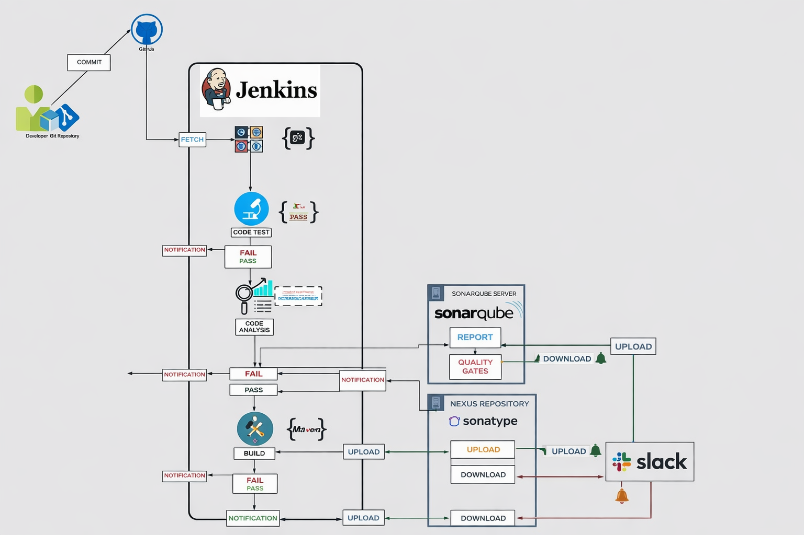
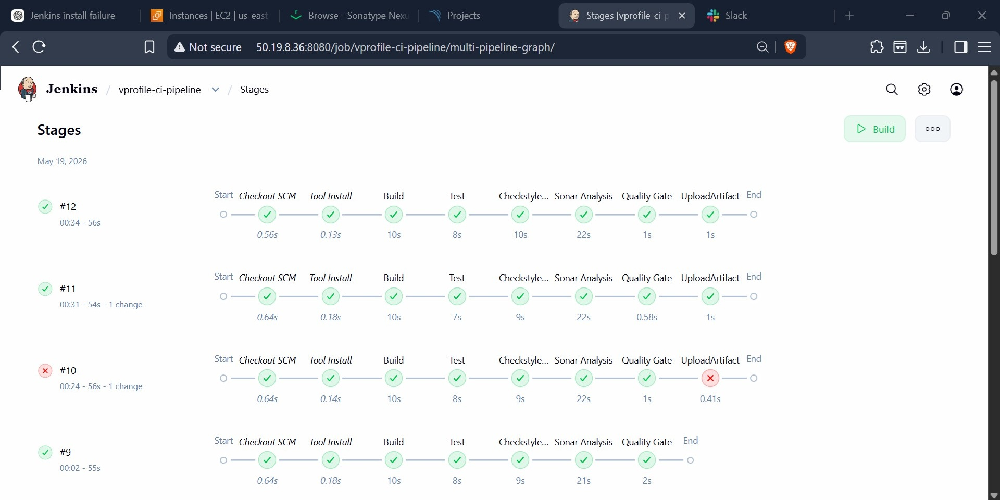
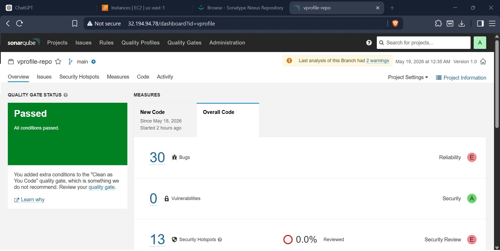
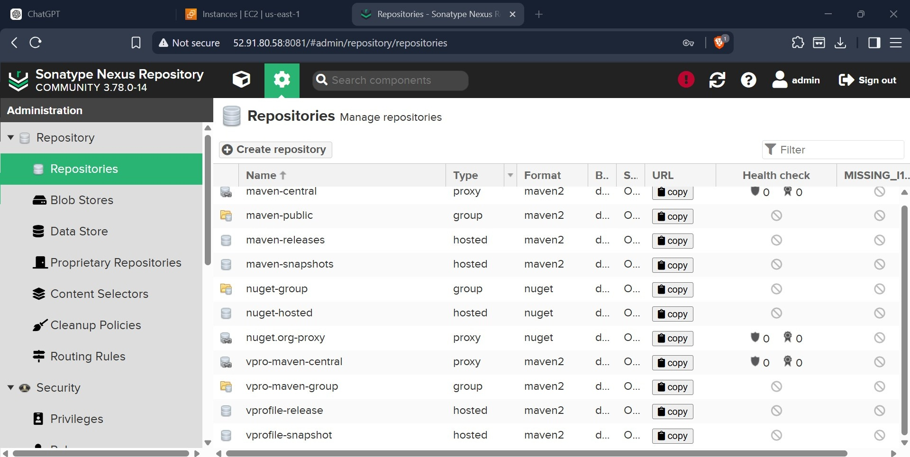
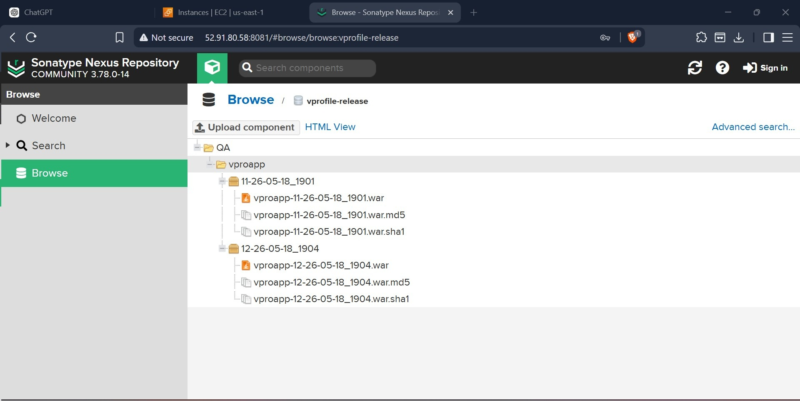
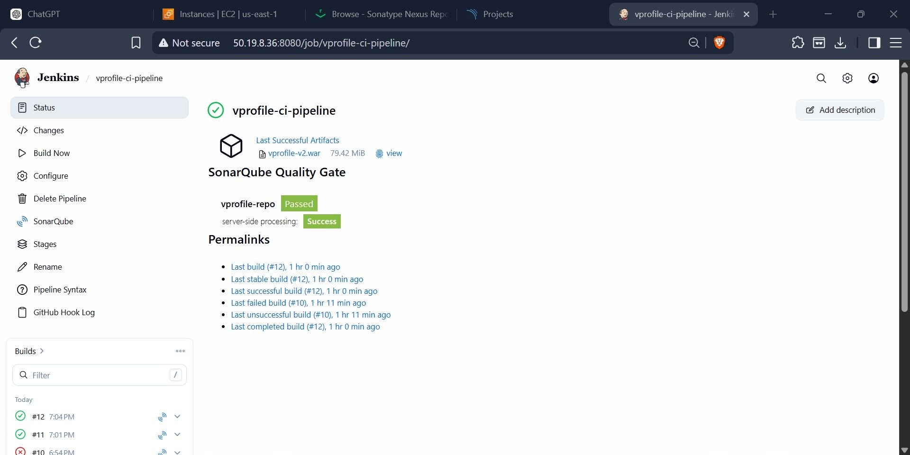
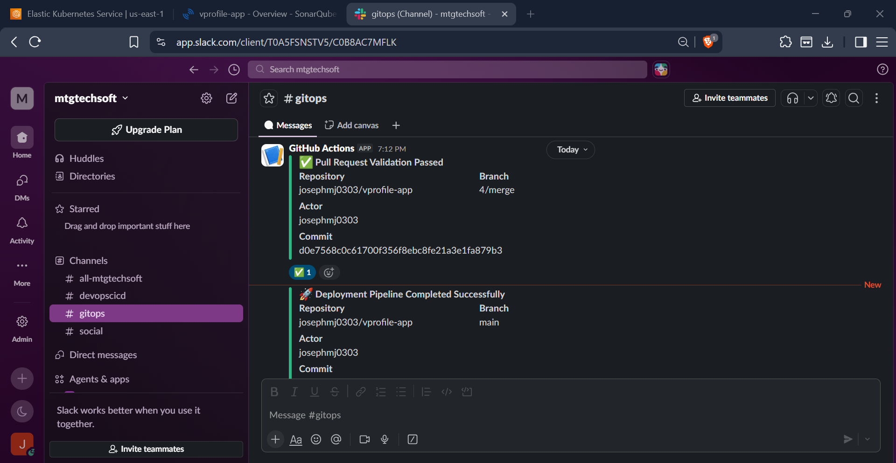

Production-style Continuous Integration platform implementing automated builds, code quality analysis, artifact management, and team notifications using Jenkins, SonarQube, Nexus Repository, and Slack.

This project demonstrates a complete enterprise-style Continuous Integration (CI) pipeline built using Jenkins, SonarQube, Nexus Repository, Maven, GitHub Webhooks, and Slack Notifications. The platform automates the software delivery workflow from source code commit through build validation, static code analysis, artifact packaging, repository storage, and team notifications. The solution simulates real-world DevOps practices used by enterprise engineering teams to improve software quality, automate build processes, enforce quality gates, and maintain artifact traceability across application releases.

Jenkins Pipeline Stages

SonarQube Quality Gate

Nexus Repository Manager

Published Build Artifacts

Successful Pipeline Execution

Slack Build Notifications
This project demonstrates end-to-end Continuous Integration automation, covering source control integration, build orchestration, code quality analysis, artifact management, and team collaboration workflows. It showcases practical experience with enterprise CI/CD tooling and modern DevOps delivery practices widely adopted in production environments.